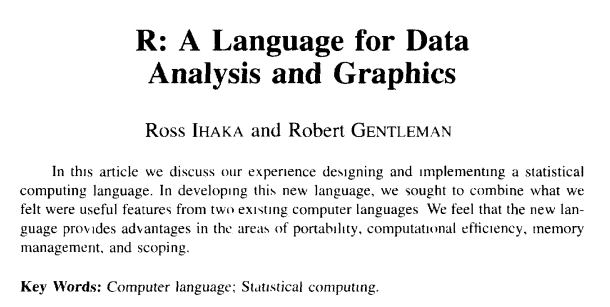
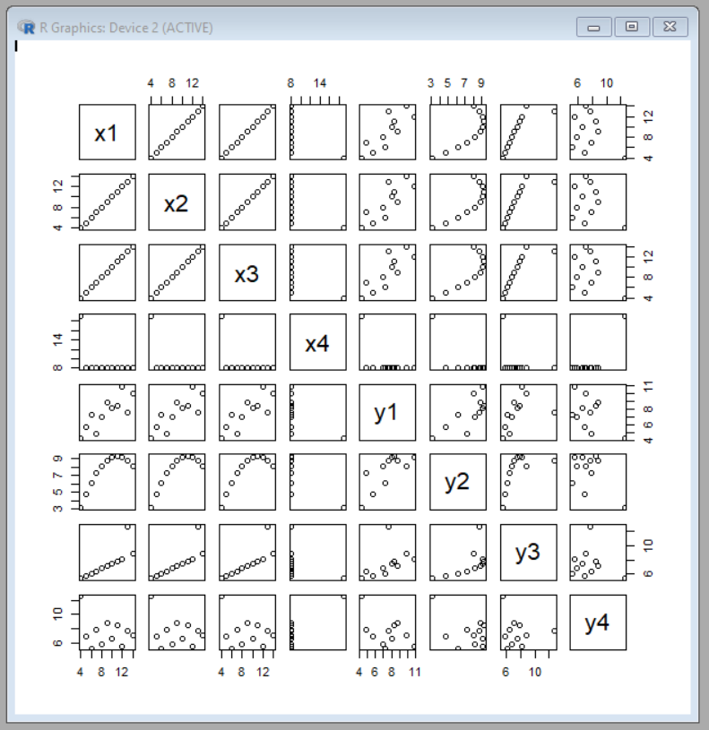
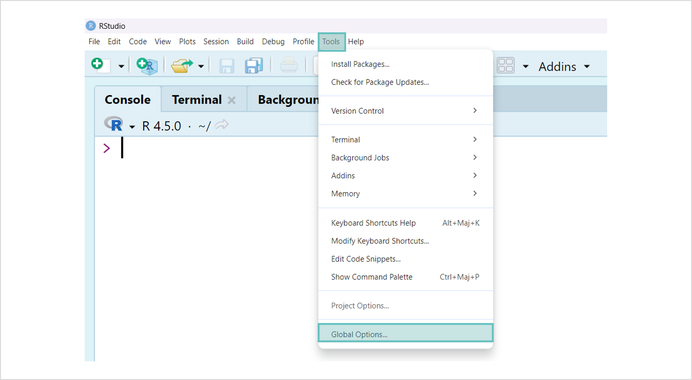
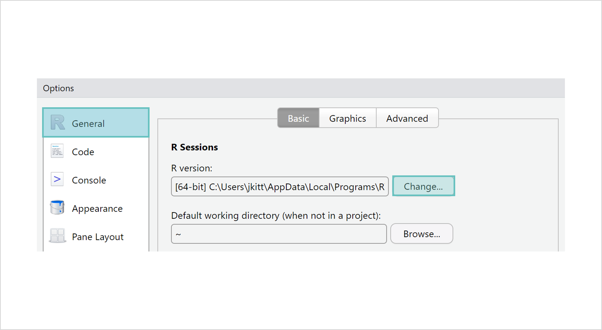
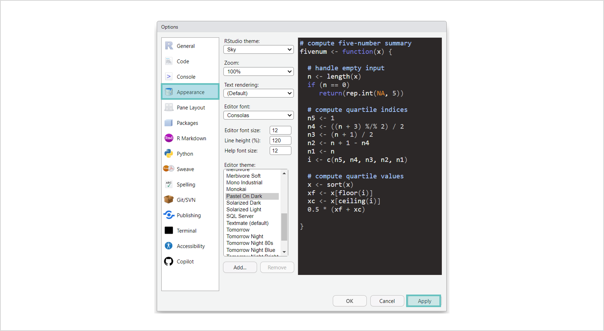
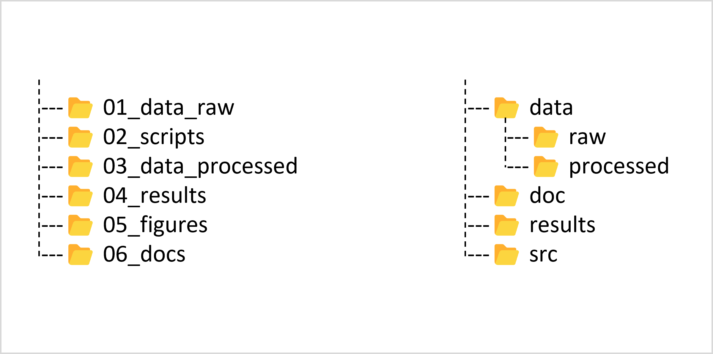
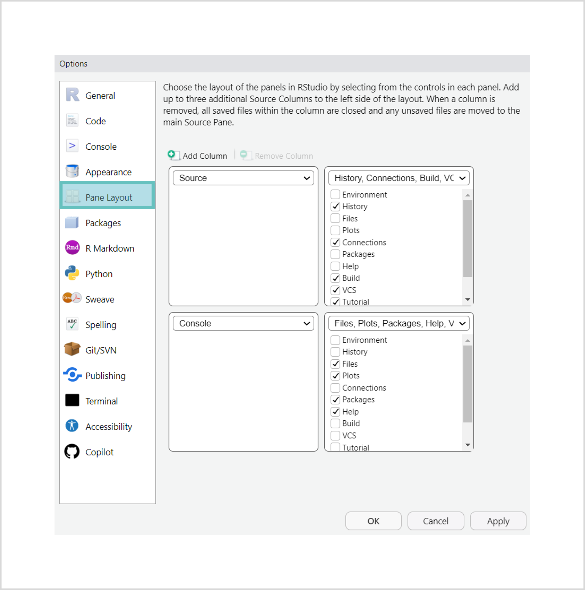

Initiation à R
Premiers pas avec R et RStudio
![]()
🎯Objectifs
1) Découvrir les bases de R et RStudio
types et structures de données
importer, explorer, manipuler, exporter des données
prise en main de RStudio
2) Mettre en oeuvre les bonnes pratiques de code
organiser son travail dans un projet
sauvegarder le code dans un script
ℹ️ À savoir
❓ Concept, définition
🫵 Mise en pratique
✅ Solution
⚙️ Paramètres, options
⌨️ Raccourci clavier
Introduction
Qu’est-ce que R ?
- Un langage de programmation développé dans les années 1990.
- Le logiciel qui utilise ce langage (calculs statistiques, figures, …)

Avantages et inconvénients de R
🟢 Spécialisé pour les statistiques et les données
🟢 Large palette d’extensions
🟢 Excellentes capacités de visualisation
🟢 Communauté active
🟢 Intégration avec d’autres outils
🟢 Open source
Avantages et inconvénients de R
🔴 Courbe d’apprentissage
🔴 Performances
🔴 Moins adapté à la programmation orientée objet
🔴 Moins adapté aux applications de production
🔴 Gestion des erreurs
🔴 Interopérabilité limitée
Avantages et inconvénients de R
R est un excellent langage pour l’analyse statistique et la visualisation de données, mais présente des limitations lorsqu’il s’agit de performances ou de développement d’applications de grande échelle.
Premières commandes
❓Interface Graphique Utilisateur
❓Interface Graphique Utilisateur
❓Interface Graphique Utilisateur
❓Interface Graphique Utilisateur
❓Interface Graphique Utilisateur
🫵Premières commandes - calculs
Ouvrir l’Interface Graphique Utilisateur de R
Dans la console, taper les commandes suivantes à la suite de l’invite de commande, et les exécuter à l’aide de la touche
Entrée:
✅Premières commandes - calculs
✅Premières commandes - calculs
✅Premières commandes - calculs
🫵Premières commandes - figures
Exécuter la commande suivante :
✅Premières commandes - figures

RStudio
❓Environnement de Développement Intégré
Un IDE (Integrated Development Environment) contient :
Un éditeur de code
Un terminal intégré
Un gestionnaire de projets
Des outils d’aide (auto-complétion, coloration syntaxique, …)
❓Environnement de Développement Intégré
R vs. RStudio

RStudio
Panneaux et onglets
Panneaux et onglets
Panneaux et onglets
Panneaux et onglets
Panneaux et onglets
Panneaux et onglets
Panneaux et onglets
Panneaux et onglets
Panneaux et onglets
Panneaux et onglets
Panneaux et onglets
Panneaux et onglets
Panneaux et onglets
🫵Exécuter des commandes dans RStudio
Dans la console de RStudio, taper et exécuter les commandes suivantes (à l’aide de la touche Entrée) :
✅Exécuter des commandes dans RStudio
🫵Historique des commandes
Dans la console :
Utiliser les flèches ⬆️ et ⬇️ pour naviguer dans l’historique des commande exécutées
Exécuter la commande choisie à l’aide de la touche
Entrée
⌨️Vider la console
Ctrl + L
🫵Historique des commandes
À partir de l’onglet History :
Sélectionner la commande désirée
Cliquer sur
To ConsoleExécuter la commande à l’aide de la touche
Entrée
🫵Historique des commandes
⚙️Paramètres de RStudio
Tools ▶️ Global Options
⚙️Version de R
Tools ▶️ Global Options ▶️ General
⚙️Thème
Tools ▶️ Global Options ▶️ Appearance
Organiser son travail
Le workflow en Data Science
Adapté du livre R for Data Science (2ed)
❓Projet
Travailler dans un projet présente plusieurs avantages :
🟢 Organisation et structure : regrouper scripts, données, résultats, figures, rapports
🟢 Gestion simplifiée du répertoire de travail
🟢 Reproductibilité
🟢 Environnement de travail isolé
🟢 Intégration avec git
🫵Créer un nouveau projet
File ▶️ New Project ▶️ New Directory ▶️ New Project
Choisir un nom de projet (ex : formation_r)
Définir l’emplacement du projet (ex : C:/Users/user)
Cliquer sur
Create Project
✅Créer un nouveau projet
✅Créer un nouveau projet
✅Créer un nouveau projet
✅Créer un nouveau projet
Nouveau projet
🫵Ouvrir un projet
🫵Ouvrir un projet
🫵Ouvrir un projet
🫵Ouvrir un projet
❓Répertoire de travail (courant)
Dossier (répertoire) dans lequel on se trouve.
(Current) working directory
Deux commandes :
getwd()pour afficher le répertoire de travail etsetwd(dir = "...")pour définir manuellement le répertoire de travailDans un projet, le répertoire de travail est situé à la racine du projet
🫵Répertoire de travail
Dans la console, taper et exécuter la commande
getwd()Dans l’onglet
Files, placez-vous à un autre endroit que le répertoire de travailRevenez dans le répertoire de travail :
⚙️More▶️Go To Working DirectoryDans l’onglet
Files, définissez le répertoire de travail :⚙️More▶️Set As Working Directory
✅Répertoire de travail
Arborescence
Utilisable pour l’ensemble des projets (la plus logique possible)
Syntaxe cohérente pour les noms de dossiers
🫵Arborescence
à l’intérieur d’un explorateur de fichiers
dans l’onglet
Files:

🫵Arborescence
Exemples d’arborescence (à adapter selon vos besoins) :
✅Arborescence
❓Script
Document texte contenant du code … mais pas uniquement !
🟢 Modifier et sauvegarder le code
🟢 Structurer et documenter le code
🟢 Exécuter des portions de code
🟢 Identifier et résoudre les erreurs
🟢 Partager le code (reproductibilité)
🫵Créer un nouveau script
🫵Créer un nouveau script
🫵Créer un nouveau script
✅Créer un nouveau script
❓Les commentaires
Les lignes de code débutant par un # ne sont pas exécutées : on parle de commentaires.
ajouter un en-tête au script
documenter le code (“pourquoi” plutôt que “comment”)
inactiver une ligne de code ou des blocs de code (résolution de bugs)
⌨️Ajouter ou supprimer un commentaire
Ctrl + Shift + C
🫵Documenter un script
En haut du script, indiquer les informations suivantes à l’aide de commentaires (#) :
le rôle du script
l’auteur du script (vous)
la date
✅Documenter un script
🫵Sauvegarder un script
🫵Sauvegarder un script
✅Sauvegarder un script
⚙️Disposition et contenu des panneaux
Tools ▶️ Global Options ▶️ Pane Layout
Importer des données
Le jeu de données
Le jeu de données
🫵Télécharger les données
Sauvegarder le fichier dans le dossier approprié
💡Depuis la version 4.5.0, ce jeu de données est inclus dans R (avec des différences dans les noms de certaines variables)
✅Télécharger les données
🫵Importer les données
🫵Importer les données
🫵Importer les données
🫵Importer les données
🫵Importer les données
🫵Importer les données
🫵Importer les données
🫵Importer les données
🫵Importer les données
🫵Importer les données
🫵Importer les données
🫵Importer les données
🫵Importer les données
🫵Importer les données
🫵Importer les données
🫵Importer les données
✅Importer les données
✅Importer les données
❓csv et csv2
Il existe deux variantes du format csv (comma-separated values) :
| Variante | Séparateur de colonnes | Séparateur décimal | Commande |
|---|---|---|---|
.csv |
, |
. |
read.csv() |
.csv2 |
; |
, |
read.csv2() |
❓Fonctions
Toutes les opérations effectuées jusqu’ici ont fait appel à des fonctions :
+plot()read.csv()View()
❓Fonction
🫵Fonction read.csv()
En utilisant l’onglet
History, retrouver la commandepenguins <- read.csv(...)Envoyer cette commande vers la console à l’aide de
To ConsoleSupprimer le début de la commande pour ne conserver que
read.csv(...)Exécuter la commande à l’aide de la touche
Entrée
Que se passe-t-il ?
✅Fonction read.csv()
🫵penguins <- read.csv("...")
En utilisant l’onglet
History, retrouver la commandepenguins <- read.csv(...)Envoyer cette commande vers la console à l’aide de
To ConsoleExécuter la commande à l’aide de la touche
Entrée
Qu’est-ce qui diffère de la commande précédente read.csv("...") ?
❓Assignation
❓Language orienté objet
R est un langage orienté objet : tout ce que l’on manipule (valeurs numériques, tableaux, …) est un objet.
En informatique, un objet est une entité qui regroupe :
des attributs (information)
des méthodes liéées au type de l’objet
❓Language orienté objet
La fonction c() permet de concaténer des éléments.
Une chaîne de caractères est encadrée par des guillemets (quotes) : "..."
L’objet liste_de_courses est de type character :
L’objet liste_de_courses possède des attributs :
❓Language orienté objet
Les méthodes sont des opérations applicables aux objets.
La fonction print() permet d’afficher le contenu d’un objet :
Multiplier une chaîne de caractères n’a aucun sens :
❓Environnement global
Espace de travail dans lequel sont stockés tous les objets
Existe tant qu’une session R est ouverte
La commande
ls()(list) permet d’afficher tous les objets présents dans l’environnement global
🫵Objets et environnement
Créer l’objet
nombrescontenant les valeurs 1, 2 et 3Afficher la liste des objets présents dans l’environnement global
Dans quel ordre les objets sont-ils affichés ?
✅Objets et environnement
🫵Compléter le script - importer les données
En utilisant l’onglet
History, retrouver la commandepenguins <- read.csv("...")Envoyer cette commande vers le script à l’aide de
To Source
ou
Dans la console, naviguer dans l’historique des commandes à l’aide des touches ⬆️ et ⬇️
Retrouver la commande
penguins <- read.csv("...")Copier cette commande (
Ctrl+C) et la coller dans le script (Ctrl+V)
✅Compléter le script - importer les données
✅Compléter le script - importer les données
🫵Structurer un script
Sous l’en-tête du script (au-dessus de la commande
penguins <- read.csv("..."), ajouter un commentaire :# Importer les donnéesAjouter à la fin de ce commentaire au moins quatre tirets :
----
Le commentaire ajouté devient un titre de section.
✅Structurer un script
🫵Table des matières
❓Niveaux de titres
Il est possible de définir des titres de différents niveaux (jusqu’à 6), ajoutant des # :
⌨️Insérer une nouvelle section
Ctrl + Shift + R
Les niveaux doivent être ajoutés manuellement
❓Se repérer dans un script
🫵Replier / développer le code
Replier le code de la section
Importer les donnéesen cliquant sur la flèche à gauche du titre de la sectionDévelopper le code de la section en cliquant à nouveau sur la flèche à gauche du titre (ou en cliquant sur ↔︎️ à droite du titre de la section)
⌨️Replier / développer toutes les sections
Alt + O (replier) et Alt+ Shift + O (développer)
✅Replier / développer le code
❓Chemin absolu vs. chemin relatif
Le chemin indique l’emplacement d’un fichier ou d’un dossier dans un système de fichiers.
Chemin absolu : depuis la racine du système de fichiers
Chemin relatif : depuis la racine du répertoire de travail (le projet dans notre cas)
🫵Modifier le script - chemin relatif
Dans l’appel à la fonction read.csv(), remplacer le chemin absolu (utilisé par défaut lors de l’importation du fichier telle que nous l’avons effectuée) par le chemin relatif.
Pensez à sauvegarder régulièrement votre script !
🫵Exécuter le code
Placer le curseur sur la ligne de code
penguins <- read.csv("...")Cliquer sur l’icône
Runen haut à droite du scriptSélectionner l’ensemble du script
Cliquer sur l’icône
Run
Que remarquez-vous dans la console ?
⌨️Exécuter le code
Pour une ligne ou une sélection de lignes :
Ctrl+EntréePour exécuter tout le script :
Ctrl+Shift+Entrée(exécute la fonctionsource()dans la console)
✅Exécuter le code
❓Auto-complétion
R permet de compléter le code en cours d’écriture :
taper quelques caractères
appuyer sur la touche
Tab(se fait automatiquement à partir de trois caractères)naviguer dans la liste proposée à l’aide des flèches ⬆️ et ⬇️
valider son choix à l’aide de la touche
Tab(ouEntrée)
🫵Auto-complétion - fonction
Sur la ligne
penguins <- read.csv("..."), supprimer la commanderead.csv("...")Taper
reet appuyer sur la toucheTabChercher la fonction
read.csv()et valider en appuyant sur la toucheTab(ouEntrée)Supprimer la commande
read.csv()Taper
rea
Que remarquez-vous ?
✅Auto-complétion - fonction
🫵Auto-complétion - chemin
Dans l’appel à la fonction
read.csv(), à l’intérieur des parenthèses, ajouter un guillemet double"(le deuxième guillemet est ajouté automatiquement pour compléter la paire)Appuyer sur la touche
Tabet choisir le fichier à importerValider à l’aide de la touche
Tab(ouEntrée, mais cela nécessite d’appuyer à nouveau surTabpour compléter le chemin si l’on navigue dans les dossiers)
✅Auto-complétion - chemin
🫵Auto-complétion - environnement global
Sur une nouvelle ligne : taper
pen(oupe+Tab)Choisir l’objet
penguinset valider à l’aide de la toucheTab(ouEntrée)
✅Auto-complétion - environnement global
🫵Nettoyer l’environnement global
La fonction
rm()permet de supprimer un objet (ou plusieurs objets) de l’environnement global : dans la console, taperrm(nombres)Dans l’onglet
Environment, cliquer surList(à droite) et sélectionnerGrid.
Quelle différence remarquez-vous dans l’ordre d’affichage des objets ?
Cocher la case à gauche de l’objet
liste_de_coursesCliquer sur l’icône 🧹 et confirmer la suppression de l’objet
liste_de_courses
Cliquer sur l’icône 🧹 alors en mode “List” causera la perte de tous les objets de l’environnement global.
✅Nettoyer l’environnement global
⚙️Mettre en évidence les fonctions
Tools ▶️ Global Options ▶️ Code ▶️ Display
⚙️Environnement de travail et historique
Tools ▶️ Global Options ▶️ General ▶️ Basic
Explorer les données
🫵Compléter le script
Créer une nouvelle section intitulée “Explorer les données”
✅Compléter le script
🫵Structure des données
Dans l’environnement global, repasser en mode “List”
Cliquer sur la flèche à gauche de l’objet
penguinsCliquer sur l’icône “tableau” à droite sur la ligne de l’objet
penguinsdans l’environnement globalLa fonction
str()permet d’afficher la structure d’un objet. Dans la console, taper la commandestr(penguins)
✅Structure des données
❓La fonction str()
❓La fonction str()
❓La fonction str()
❓La fonction str()
❓La fonction str()
❓La fonction str()
❓La fonction str()
❓La fonction str()
🫵Explorer les données
Dans la console, taper les commandes suivantes.
dim(penguins)nrow(penguins)ncol(penguins)names(penguins)etcolnames(penguins)
Que renvoie chacune des commandes ?
✅Explorer les données
🫵Afficher le contenu d’une variable
Dans la console, taper la commande penguins$year (penser à l’auto-complétion).
Que représentent les nombres entre crochets au début de chaque ligne ?
✅Afficher le contenu d’une variable
Les nombres entre crochets sont les index des valeurs affichées (la 2ème ligne débute avec la 16ème valeur de la variable year)
🫵Afficher les premiers et les derniers éléments
Dans la console, taper et exécuter les commandes suivantes :
head(penguins)ethead(penguins$year)tail(penguins)ettail(penguins$year)
Quelle est la différence entre ces deux fonctions ?
Quelle est la différence entre l’utilisation de ces fonctions pour un tableau ou une variable ?
Combien d’éléments sont affichés ?
✅Afficher les premiers et les derniers éléments
❓Aide d’une fonction
La fonction help() permet d’afficher l’aide d’une fonction. Elle s’utilise de la manière suivante : help(head) ou ?head.
L’aide d’une fonction est également accessible en tapant les premières lettres du nom de la fonction et en appuyant sur la touche Tab puis la touche F1.
❓Aide d’une fonction
Description : ce que fait la fonction
Usage : comment utiliser la fonction
Arguments : différentes manières d’utiliser la fonction
Details : description détaillée de la fonction
Value : ce que renvoie la fonction
Note : précisions
Author(s) : liste des personnes qui ont contribué à l’écriture du code et aux éventuelles modifications et corrections
Examples : exemples d’utilisation de la fonction (exemples exécutables directement dans RStudio)
🫵Aide d’une fonction
Parcourir rapidement l’aide de la fonction head().
Comment faire pour afficher les trois première lignes du tableau penguins ?
✅Aide d’une fonction

✅Aide d’une fonction
🫵Les fonctions attach() et detach()
La fonction attach() permet de faire référence aux variables en utilisant leurs noms, sans avoir besoin d’utiliser la syntaxe data.frame$variable.
Dans la console, taper et exécuter les commandes suivantes :
attach(penguins)head(year)detach(year)head(year)
✅Les fonctions attach() et detach()
🫵La fonction search()
La fonction search() permet de lister les objets “attachés”.
Dans la console, taper et exécuter les commandes suivantes :
search()attach(penguins)search()detach(penguins)search()
Que remarquez-vous ?
✅La fonction search()
🫵La fonction summary()
Dans la console, taper et exécuter la commande suivante : summary(penguins)
Que retourne cette commande ?
Quelles différences remarquez-vous dans le résultat ?
✅La fonction summary()
✅La fonction summary()
✅La fonction summary()
🫵La fonction summary()
Dans la console, taper et exécuter les commandes suivantes :
summary(penguins$species)summary(penguins$body_mass_g)
Que renvoient ces deux commandes ?